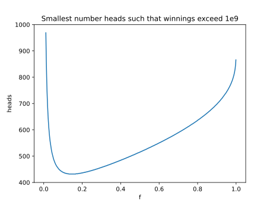

I had so many embarrassing mistakes while working on this problem. I misread the problem statement. I calculated the power of two incorrectly. I made an error writing a large number in scientific notation.
With all those issues worked out though, this problem was easy to grasp. I started by creating the equation defining how much money you will have after $h$ coin flips landing on heads, given the value $f$.
\[(2f+1)^h\:(1-f)^{1000-h}\]This allowed me to determine the smallest number of heads required for each value of $f$. Plotting these values, you can easily see there is a single clear minimum value.

From here, it is just binomial probabilities to get the answer.
import math
log_1e9 = math.log(1e9)
def smallest_h(f):
for h in range(1001):
if h * math.log(2*f + 1) + (1000 - h) * math.log(1 - f) >= log_1e9:
return h
return float('nan')
def solve():
f = 0.01
heads = next_heads = 1000
while next_heads <= heads:
f += 0.01
heads, next_heads = next_heads, smallest_h(f)
prob = 0
for h in range(heads, 1001):
prob += math.comb(1000, h)
prob /= 1 << 1000
return round(prob, 12)
if __name__ == '__main__':
print(solve())